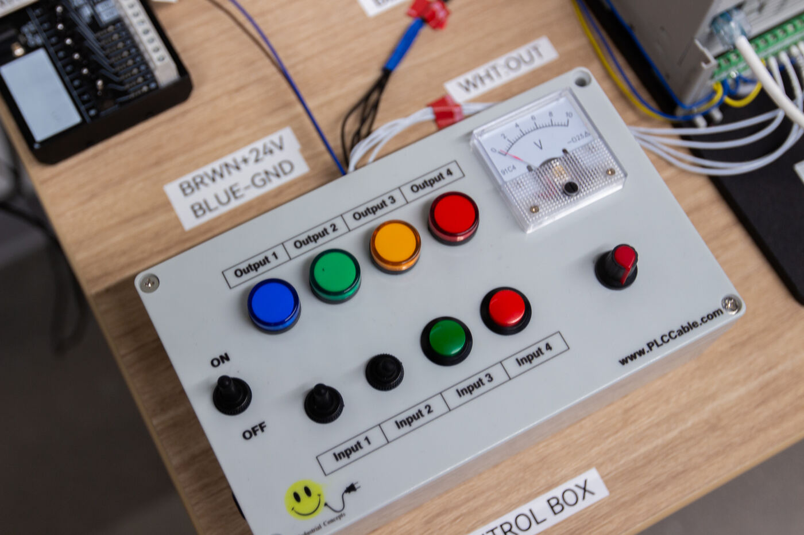
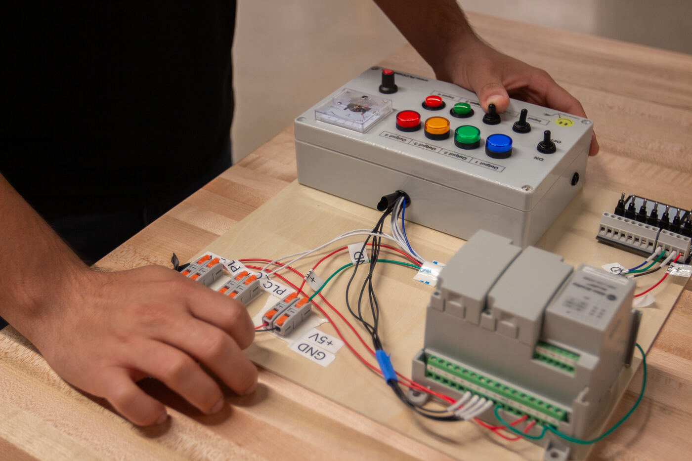

← Back to facilities
Facilities & equipment
Allen-Bradley PLCs
What they are
Programmable logic controllers (PLCs) - the industrial computers that run automated machinery. The lab's automation workcell is built around the Allen-Bradley Micro850, programmed with Connected Components Workbench (CCW) and reached over Modbus TCP.

A PLC training panel used in automation instruction.

Panel wiring on the automation workbenches.
How the lab uses them
The PLCs are the backbone of the industrial automation lab series (in preparation): safe 24 VDC power and emergency-stop circuits, ladder logic and structured text programming, conveyor, sensor and pneumatic sequence control, HMI and SCADA development with Ignition, and smart-factory integration with MQTT and digital twins.